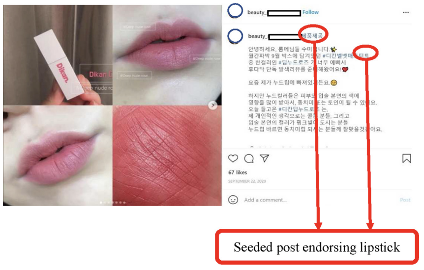

|  |
Are More Followers Always Better? The Non-Linear Relationship between the Number of Followers and User Engagement on Seeded Marketing Campaigns in Instagram
and Shijin Yoo Asia Marketing Journal, 2022 paper |